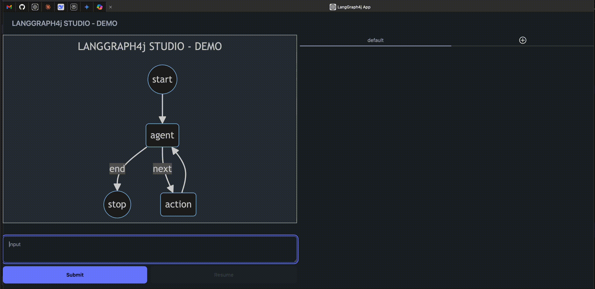

🦜🕸️ LangGraph4j Studio
Studio is a specialized agent IDE that enables visualization, interaction, and debugging of agentic systems that runs a Langgraph4j workflow.

Features
- Multi grap(s) support
- Show graph diagram
- Run a workflow
- Show which step is currently running
- Show state data for each executed step
- Allow edit state data and resume execution
- Manage Interruptions
Core Concepts
LangGraph4j Studio provides a server that can host one or more LangGraph4j graph instances. Each instance is a StateGraph that can be compiled and executed. The studio provides a web-based UI to visualize the graph, execute it, and inspect the state at each step.
The communication between the browser and the server is handled via HTTP and results is consuming via HTTP streaming.
LangGraphStudioServer
This is the main interface of the SDK. It defines the nested classes and interfaces used to configure and run the server.
LangGraphStudioServer.Instance
An Instance represents a single graph that is hosted by the server. It is created using the LangGraphStudioServer.Instance.Builder.
The builder allows you to configure:
title: The title of the graph, displayed in the UI.graph: TheStateGraphto be hosted.compileConfig: TheCompileConfigto be used when compiling the graph. ACheckpointSaveris required.input arguments: The input arguments that the graph expects. These are displayed as input fields in the UI. You can add string and image arguments.
LangGraphStudioServer.GraphInitServlet
This servlet is responsible for providing the frontend with the necessary information to initialize the UI for a specific graph instance.
- Registration: This server must be registered on
/initpath spec. - Endpoint: It handles
GETrequests to/init. - Functionality: It requires an
instance=<instance_id>query parameter to identify the graph. It returns a JSON object containing:- The graph's title.
- A Mermaid diagram representing the graph's structure.
- The input arguments the graph expects, which are used to build the input form in the UI.
- A list of existing execution threads.
LangGraphStudioServer.GraphStreamServlet
This servlet is the main endpoint for executing the graph and streaming the results back to the client.
- Registration: This server must be registered on
/stream/*path spec. - Endpoint: It handles POST requests to
/stream/<instance_id>, where<instance_id>identifies the graph to run. - Functionality:
- It accepts a JSON payload in the request body containing the input values for the graph execution.
- It uses asynchronous processing (
jakarta.servlet.AsyncContext) to handle long-running graph executions without blocking the server thread. - It invokes the
compiledGraph.streamSnapshots(...)method. - As the graph executes, this servlet streams each
NodeOutput(the result of a single node's execution) back to the client as a server-sent event. The UI then uses these events to visualize the execution flow and display the state at each step in real-time. - It supports resuming from a previous state, allowing for features like human-in-the-loop interaction.
Open Studio
To run LangGraph4j Studio application, open browser and navigate to:
http://localhost:<port>/?instance=<instance_id>
where <port> is the port you specified in your configuration and <instance_id> is the instance id that you want show up in the browser.
Reference Implementations
Use Jetty implementation
Add dependency to your project
<dependency>
<groupId>org.bsc.langgraph4j</groupId>
<artifactId>langgraph4j-studio-jetty</artifactId>
<version>1.9-SNAPSHOT</version>
</dependency>
Create a workflow and connect it to the playground webapp
public static void main(String[] args) throws Exception {
var workflow = new StateGraph<>(AgentState::new);
// define your workflow
var saver = new MemorySaver();
var instance = LangGraphStudioServer.Instance.builder()
.title("LangGraph4j Studio")
.addInputStringArg("input")
.graph(workflow)
.compileConfig(CompileConfig.builder()
.checkpointSaver(saver)
.build())
.build();
// connect playground webapp to workflow
LangGraphStudioServer4Jetty.builder()
.port(8080)
.instance("default", instance)
.build()
.start()
.join();
}
Use Spring Boot implementation
Add dependency to your project
<dependency>
<groupId>org.bsc.langgraph4j</groupId>
<artifactId>langgraph4j-studio-springboot</artifactId>
<version>1.9-SNAPSHOT</version>
</dependency>
Create a Custom Configuration Bean
@Configuration
public class LangGraphStudioSampleConfig extends LangGraphStudioConfig {
@Override
public Map<String, LangGraphStudioServer.Instance> instanceMap() {
var workflow = new StateGraph<>(AgentState::new);
// define your workflow
var instance = LangGraphStudioServer.Instance.builder()
.title("LangGraph Studio")
.graph(workflow)
.build();
return Map.of("default", instance);
}
}
Create and Run a Standard Spring Boot Application
import org.springframework.boot.SpringApplication;
import org.springframework.boot.autoconfigure.SpringBootApplication;
@SpringBootApplication
public class LangGraphStudioApplication {
public static void main(String[] args) {
SpringApplication.run(LangGraphStudioApplication.class, args);
}
}